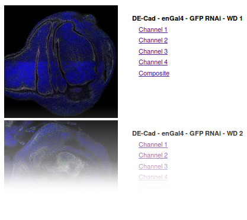

Using Data Views¶
Introduction¶
Providing a good entry point to the different data sets served by a CATMAID instance is important. Depending on number and type of the projects and stacks, different views on this data might help you with keeping an overview or to spot the data set you are interested in. CATMAID’s data views try to help you with that. With them you can define and tweak the front page of CATMAID.
In fact, you can have as many front pages as you want. The ones available are accessible through a menu, activated by hovering the Home link in the menu. The one used when the CATMAID site is opened, differs only in one aspect from the others: it is marked as default. All data views are configured instances of a particular data view type. They define the basic structure of the page, but allow to pass parameters to adjust some parts.
Currently, CATMAID comes with two pre-defined data views: Project list and Project table with images. The latter is used as the default, i.e. it is shown when CATMAID is loaded. Both views have different view types. They are Project list and Project table. There is also two more data view types that are not used by the pre-defined views: Legacy project list. It allows the display of a project list used before the advent of data views. Then there is also the Project tag table which allows the construction of a table based on tags. The details are described below.
Different use cases might require different data view types. How to extend CATMAID and create own data view types is explained in section Creating new Data View Types.
Configuring Data Views¶
To add new or modify the present views, the Django admin interface is used. By default, you’ll find it at http://<CATMAID-URL>/admin or a similar URL. It is not necessarily the case, that every CATMAID user can administer data views. This depends on the permissions granted and in case you can’t log-in or don’t see the relevant parts within the admin interface, talk to your CATMAID administrator.
In the admin interface you will be presented different configuration options for CATMAID. Amongst them, the data view management:

Depending on your CATMAID setup, the admin interface might look a bit different. Opening the data view configuration will get you a list of all available data views. By default this looks like this:

Next to the name and the type of each view, the position is visible (1). With the help of this number you can define the order of the views in the drop down menu and within this admin view list. The positioning can be changed right there in the list. If you edited the position numbers, click Save (3) to, well, save your changes. Also indicated is whether a view is default or not (2). If you want to change this setting, please open up the configuration of one particular data view (see below). Creating a new data view can be accomplished by the button in the upper right (4). The same interface is used for adding new views and editing existing ones. Editing the default view looks like this:

There are quite some configuration options here: One can easily adjust the title (1), mark a view as the default (4) or define its position (5). Setting a data view as the default view, will mark all other views as non-default at the same time.
If the data view type is changed (2), the help text under the configuration
box (3) is updated accordingly. Every data view type has its own set of
options and the help text will tell you about those. In the case of the
figure above, a Tabular project view type is used. A detailed description
of the options available can be found below. The format used to define
them is called JSON and in order to
only use the default options you have to set the configuration to {}.
If you enter text that cannot be parsed as JSON you will get an error when
saving. Saving invalid text is thereby prevented. Typos in option names,
however, will not be identified.
If wanted, a comment can be added as well. This will be displayed to the right of the data view title in the menu.
Different Data View Types¶
Like said above, a data view type defines the general structure of a concrete data view, but gives some configuration options. For instance, most of the types offer to show sample images. If an option is not present in a data views configuration, its default value is used.
Options in help texts usually have the following notation:
"<name>":[option1|option2]
An option name has to be quoted and the value has to be delimited by a colon.
However, also values might need quoting if they are strings other than
true or false (and no numbers). Alternative values are separated by
a logical or/pipe symbol (|) and only one of them can be used. Let’s
have a look at the sort option as an example: All data view types, except
the Legacy Project List type, support the option
"sort":[true|false].
When set to true (default), all projects are sorted naturally and when set
to false they are displayed like they come from the database. If we don’t
want to have the projects sorted, we could use this configuration:
{"sort":false}
When multiple options are used, each option is separated by a comma from another one – within the same pair of curly braces:
{"name1":opt1, "name2:opt2, ...}
Like already mentioned, there are options that are supported by all the different data view types. The only exception to this is the Legacy Project List type, which doesn’t support such general options. All the other types respect the following general options:
| Name | Options | Default |
|---|---|---|
sort |
true, false |
true |
filter_tags |
A list of tags, e.g. ["TagA", "TagB"] |
[] |
catalogue_link |
true, false |
true |
With the help of the sort option one can make sure the list of projects
a data view deals with is sorted (or that it is not). The filter_tags
option allows to define a list of tags that have to be assigned to all
projects looked at. If neuron annotations are used in a project, a so called
neuron catalogue can be displayed. By default, a link to this overview is
displayed for every project that has such annotations. This can be disabled,
by setting the catalogue_link option to false. If a data view should
get an unsorted list of projects that are tagged with Test as well as
CNS and catalogue links should not be displayed, the configuration would
look like:
{"sort":false, "filter_tags":["Test", "CNS"], "catalogue_link":false}
The remainder of this section will briefly discuss the different data view types available.
Legacy Project List¶
All data views except this one are processed or the server-side. This project
list is done with the help of JavaScript in the browser of a user. Since it was
the only view available for a long time, it is called “legacy”. It supports
an interactive live filter, but it cannot be configured in any way. Therefore,
the configuration is very likely to be just {} (an empty JSON object). It
looks like this:
Project List¶
The appearance of Project List is very similar to the one of Legacy Project List. Currently, it doesn’t support live filtering of projects, though. When a project has no stacks, it won’t be visible with this view type. It is processed server-side and offers some configuration options:
| Name | Options | Default |
|---|---|---|
sort |
true, false |
true |
filter_tags |
A list of tags, e.g. ["TagA", "TagB"] |
[] |
catalogue_link |
true, false |
true |
sample_images |
true, false |
false |
sample_stack |
stack index, "first", "last" |
0 |
sample_slice |
slice index, "first", "center", "last" |
"center" |
sample_width |
width in pixel, e.g. 50 or 75 |
orig. width |
sample_height |
height in pixel, e.g. 50 or 75 |
orig. height |
Please refer to the introduction to this section for an explanation of the
sort, filter_tags and catalogue_link options. The sample_images
option defines whether there should be a sample image displayed to the left of
each project entry. If an image is displayed, the sample_stack option
defines from which stack of the current project the image should be taken. The
stack index value of it represents a single integer (e.g. 0). If this index
is out of bounds, no image is displayed. With the option sample_slice one
defines which slice of the sample stack should be used as sample image. Again,
slice index is an integer number and no image is shown if this is not
within bounds. The option values "first" and "last" refer to the first
and last slice of the stack, "center' refers to the middle slice is the stack.
To make the sample images appear smaller or larger, the sample_width and
sample_height option can be used. The assigned number is treated as pixel
width and height, respectively.
So if you were to configure a Project List data view with a sample image which should be the middle slice of every last stack in a project, you would do this:
{"sample_images":true, "sample_stack":"last", "sample_slice":"center"}
The result could look like the following:
Project table¶
While the Project List presents all the stacks of a project as links below each other, the Project table will list all stacks in the same row as the project name. Especially when there are many projects, this helps to get an overview of all available image data. It allows the display of images as well, but in a different way than the Project List type. Instead of providing one image per project, this data view type will show one image per stack – replacing the stack name. Like the Project List type, it won’t show a project, if it has no stacks associated. The following options are supported:
| Name | Options | Default |
|---|---|---|
sort |
true, false |
true |
filter_tags |
A list of tags, e.g. ["TagA", "TagB"] |
[] |
catalogue_link |
true, false |
true |
sample_images |
true, false |
false |
sample_slice |
slice index, "first", "center", "last" |
"center" |
sample_width |
width in pixel, e.g. 50 or 75 |
orig. width |
sample_height |
height in pixel, e.g. 50 or 75 |
orig. height |
Have a look to this section’s introduction for an explanation of the sort,
filter_tags and catalogue_link options. If images should be
displayed, the sample_images option should be set to true. Since there
is one image per stack, an option like sample_stack in the Project list
type, isn’t needed. However, with the help of the sample_slice option a
slice can be selected. Again, this can be done with an integer index or one
of the string arguments (mind the quotes!). If the numeric index is out of
range, no image will be displayed. Like in the Project List view type, the
option values "first", "center" and "last" refer to the first,
middle and last slice of each stack. To adjust the (pixel) size of sample
image, the options sample_width and sample_height can be used. If
only one of the two is used, the images are scaled proportionally.
If you wanted to display a text-only table, you would actually not need to
define anything, but {} (because of the defaults) to get something like:

However, to get an image table with the center slice of each stack where every sample image has a width of 100px, you would need to define
{"sample_images":true, "sample_slice":"center", "sample_width":100}
and you would get for example this:

Project tag table¶
In CATMAID, projects and stacks can be tagged. This can be done through the admin interface or the tagging tool (see Tagging). Based on a Project tag table data view type, a data view can create a table where each cell is associated with a row tag and column tag. Which tag is linked to which row and which tag is linked to which columns can be configured.
To understand the purpose of this data view type, let’s look at an example: You have light microscopy image stacks of different tissues. For every tissue there are image stacks for multiple proteins you are interested in. To have the tissue and the protein associated with CATMAID projects, one could just use tags: Every project would be tagged with a tissue name and protein name. To organize the data with the help of the Project tag table data view type, one could then assign the tissue tags to the columns and the protein tags to the rows of the resulting table. Each cell of the table refers then to one column (tissue) tag and one row (protein) tag. Each project will appear in a table cell that refers to tags the project itself is tagged with.
However, there are more options than the tags themselves that can be configured:
| Name | Options | Default |
|---|---|---|
sort |
true, false |
true |
filter_tags |
A list of tags, e.g. ["TagA", "TagB"] |
[] |
catalogue_link |
true, false |
true |
row_tags |
A list of tags, e.g. ["TagA", "TagB"] |
[] |
col_tags |
A list of tags, e.g. ["TagA", "TagB"] |
[] |
linked_stacks |
stack index, "first", "last", "all" |
"all" |
force_stack_list |
true, false |
false |
highlight_tags |
A list of tags, e.g. ["TagA", "TagB"] |
[] |
sample_images |
true, false |
false |
sample_slice |
slice index, "first", "center", "last" |
"center" |
sample_width |
width in pixel, e.g. 50 or 75 |
orig. width |
sample_height |
height in pixel, e.g. 50 or 75 |
orig. height |
Have a look at this section’s introduction for an explanation of the sort,
filter_tags and catalogue_link options. The tags to use for the rows
and columns can be set with the row_tags and the col_tags keywords.
To control which stacks of a project appear in a table cell, the
linked_stacks and the force_stack_list option can be used: They define
if a list of stacks is displayed per project (like in the Project list type)
and which stacks should make it into this list. By default, a complete stack
list is displayed for each project. In some situations, however, it is not
preferable to list all stacks associated with a project and so you can limit
this to either the first stack, the last or one of a specific index.
Is there only one stack (selected or at all), then the link to open it is
rendered solely as the project title and no list is displayed. If this is not
wanted, the force_stack_list option can be set to true to get a list with
one entry.
It may be desirable to highlight a group of projects which have the same tags.
This can be achieved by providing highlight_tags. All projects tagged with
at least one of those tags will be displayed in bold.
Like with the other data types, one can opt for showing images instead of stack
names. To do so, employ the sample_images option. These images will then
form links to the actual stack display. With the help of the sample_slice
keyword, the displayed slice can be selected. Again, one can choose the
"first", "last" or "center" slice of the stack. In case the default
size of these sample is too big or too small, the sample_width and
sample_height options can be used. It takes a numerical pixel value and
scales the result images accordingly.
As an example, consider the situation described above: We have image stacks of several tissues and with multiple protein markers. The imaged tissues are CNS and salivary gland. For both of them there are stacks labeled with markers called Smo and Ptc. The stacks have been labeled accordingly. Also, we only want to consider images tagged as “Valid”. Additionally, we don’t went to see all the stacks, but only the project name that links to the last stack of each project. A configuration might look like this:
{"filter_tags":["Valid"], "row_tags":["Smo", "Ptc"],
"col_tags":["CNS", "Salivary Gland"], "linked_stacks":"last" }
With this, the rendered result could look like the following: